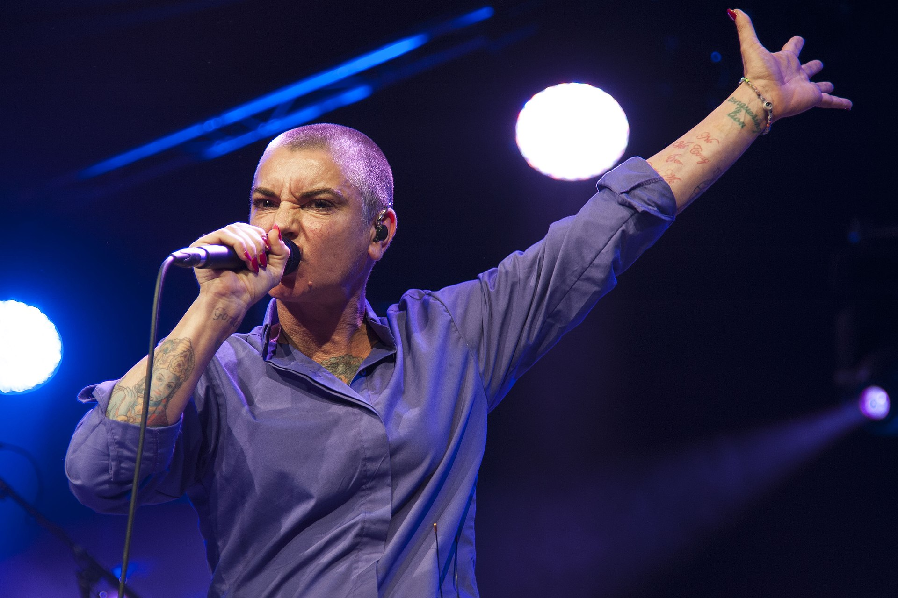

Texto
**CLOSE UP CHALLENGE:
EL PRIMER PLANO COMO EXPRESIÓN EMOCIONAL**
Situación de Aprendizaje
Nivel: 2.º Bachillerato
Año Académico: 2025–2026
Proyecto desarrollado por Juan Manuel Torrado

Sinéad O’Connor, Cambridge Folk Festival 50th Anniversary (2014).
Fotografía de Bryan Ledgard.
Fuente: Flickr (https://flickr.com/photos/97355030@N00/14645054609)
Licencia: Creative Commons Attribution 2.0 (CC BY 2.0)
Índice de Contenidos
Identificación del Proyecto
Descripción General
Fases del Proyecto
Justificación Pedagógica
Competencias y Marco Curricular
🎯 1. Identificación del Proyecto
Título Descriptivo
Close Up Challenge: el primer plano como expresión emocional
Centro de Interés
Creación de un videoclip centrado en el uso del primer plano para transmitir emociones
Nivel Educativo
2.º de Bachillerato
Temporalización
8 sesiones (aprox. 3 semanas) distribuidas en 6 fases
Materias Implicadas
Imagen y Sonido
Idioma
Español
📋 2. Descripción General
Esta Situación de Aprendizaje está diseñada para desarrollar las capacidades expresivas del alumnado a través del lenguaje audiovisual, centrando el trabajo en el uso del primer plano como recurso narrativo y emocional.
El alumnado trabajará en equipos, desarrollando un proyecto completo de creación audiovisual: desde el análisis de referentes hasta la producción y edición de un videoclip.
La propuesta se plantea como un reto creativo: transmitir emociones a través del rostro, utilizando los recursos técnicos y expresivos del lenguaje audiovisual.
Objetivos de Aprendizaje
Desarrollar la creatividad mediante la exploración del lenguaje audiovisual.
Comprender el valor expresivo del encuadre, especialmente del primer plano.
Aplicar técnicas básicas de grabación y edición de vídeo.
Fomentar el trabajo cooperativo en proyectos creativos.
Desarrollar la capacidad de comunicar emociones a través de la imagen.
Reflexionar sobre el proceso de creación audiovisual.
🎬 3. Fases del Proyecto
La secuencia didáctica se estructura en 8 sesiones organizadas en las siguientes fases progresivas:
1. Introducción y análisis de referentes
Visionado y análisis de videoclips centrados en el uso del primer plano y la expresión emocional.
2. Presentación del reto
Explicación del proyecto: creación de un videoclip centrado en el rostro y la emoción.
3. Formación de equipos y reparto de roles
Organización del trabajo cooperativo (dirección, cámara, edición, interpretación).
4. Conceptualización y planificación
Elección de la canción, definición del concepto emocional y elaboración del storyboard.
5. Ensayo y preparación técnica
Pruebas de encuadre, iluminación y expresión facial.
6. Grabación del videoclip
Registro audiovisual con predominio del primer plano.
7. Edición y montaje final
Integración de imagen y sonido, ritmo narrativo y ajustes técnicos.
8. Presentación y reflexión final
Visualización de los trabajos, puesta en común y análisis del proceso.
💡 4. Justificación Pedagógica
Fundamentación Teórica
El lenguaje audiovisual constituye una herramienta clave en la educación contemporánea, al integrar imagen, sonido, emoción y narrativa.
El uso del primer plano permite trabajar de forma directa la expresión emocional, favoreciendo la comprensión de cómo los elementos visuales influyen en la percepción del espectador.
Este enfoque resulta especialmente adecuado en la adolescencia, ya que conecta con los intereses del alumnado y con los formatos audiovisuales que forman parte de su vida cotidiana.
🎓 5. Competencias Clave (LOMLOE)
El proyecto contribuye directamente a la adquisición de las siguientes competencias clave del Perfil de salida:
CCL: Comunicación Lingüística
CD: Competencia Digital
CPSAA: Personal, social y aprender a aprender
CC: Competencia ciudadana
CCEC: Conciencia y expresión culturales